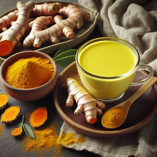

Alimentation & nutrition · 2 min de lecture
Le curcuma cet aliment magique
Les Bienfaits du Curcuma : Composition et Utilisation

Le
curcuma, cette épice dorée originaire de l'Inde, est bien plus qu'un
simple ingrédient culinaire. Utilisé depuis des millénaires dans la
médecine traditionnelle, il est reconnu pour ses nombreuses vertus
thérapeutiques.
Les Bienfaits du Curcuma
- Propriétés Anti-inflammatoires et Antioxydantes :
La curcumine, le principal principe actif du curcuma, possède de puissantes propriétés anti-inflammatoires. Elle aide à réduire l'inflammation et à neutraliser les radicaux libres dans le corps, protégeant ainsi les cellules contre les dommages. - Amélioration de la Fonction Cérébrale :
La curcumine peut augmenter les niveaux de BDNF (facteur neurotrophique dérivé du cerveau), un type d'hormone de croissance en relation avec le cerveau. Cela pourrait aider à améliorer la mémoire et réduire le risque de maladies cérébrales dégénératives comme Alzheimer. - Soutien Digestif :
Le curcuma stimule la production de bile, aidant à la digestion et à la réduction des symptômes du syndrome de l'intestin irritable (SII). - Propriétés Anticancéreuses :
Plusieurs études ont montré que la curcumine peut aider à tuer les cellules cancéreuses et empêcher la croissance de nouveaux vaisseaux sanguins dans les tumeurs. - Amélioration de la Santé Cardiaque :
La curcumine améliore la fonction de l'endothélium, la paroi des vaisseaux sanguins, et réduit l'inflammation et l'oxydation, des facteurs importants dans le développement des maladies cardiaques.
Composition du Curcuma
Le curcuma est riche en composés bioactifs, dont le plus important est la curcumine. Voici quelques composants clés :
- Curcuminoïdes : Ensemble de composés actifs, notamment la curcumine, qui donnent au curcuma ses propriétés thérapeutiques.
- Huiles Essentielles : Dont le turmérone, qui possède aussi des propriétés anti-inflammatoires.
- Minéraux et Vitamines : Le curcuma contient des traces de vitamines C et B6, ainsi que des minéraux comme le potassium, le fer et le manganèse.
Utilisation du Curcuma
Il existe de nombreuses façons d'incorporer le curcuma dans votre alimentation quotidienne :
- En Poudre : Ajouté aux currys, soupes, smoothies, et même aux desserts. Peut être utilisé pour préparer le célèbre "lait doré" ou "golden latte".
- Racine Fraîche : Râpée et ajoutée aux plats pour une saveur plus prononcée.
- En Compléments : Sous forme de gélules ou de comprimés pour un apport concentré en curcumine.
- Teintures et Extraits : Pour une utilisation facile et accrue des bienfaits thérapeutiques.
Les liens ci-dessus sont des liens d'affiliation. En utilisant le lien pour effectuer un achat, vous soutenez ce blog tout en bénéficiant des bienfaits de ce super-aliment. Merci pour votre soutien!
Guides, outils gratuits et livres pour prendre soin de toi au quotidien.
Découvrir les produits Chest0